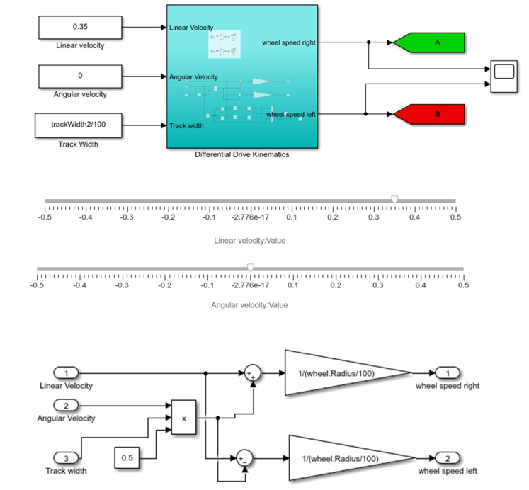
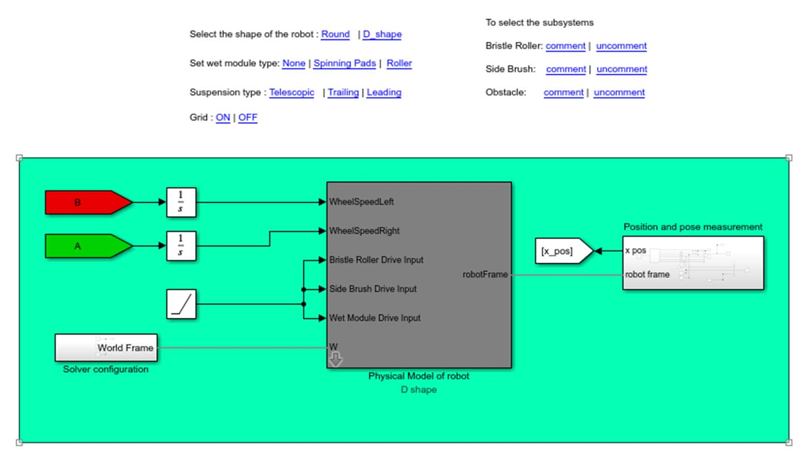
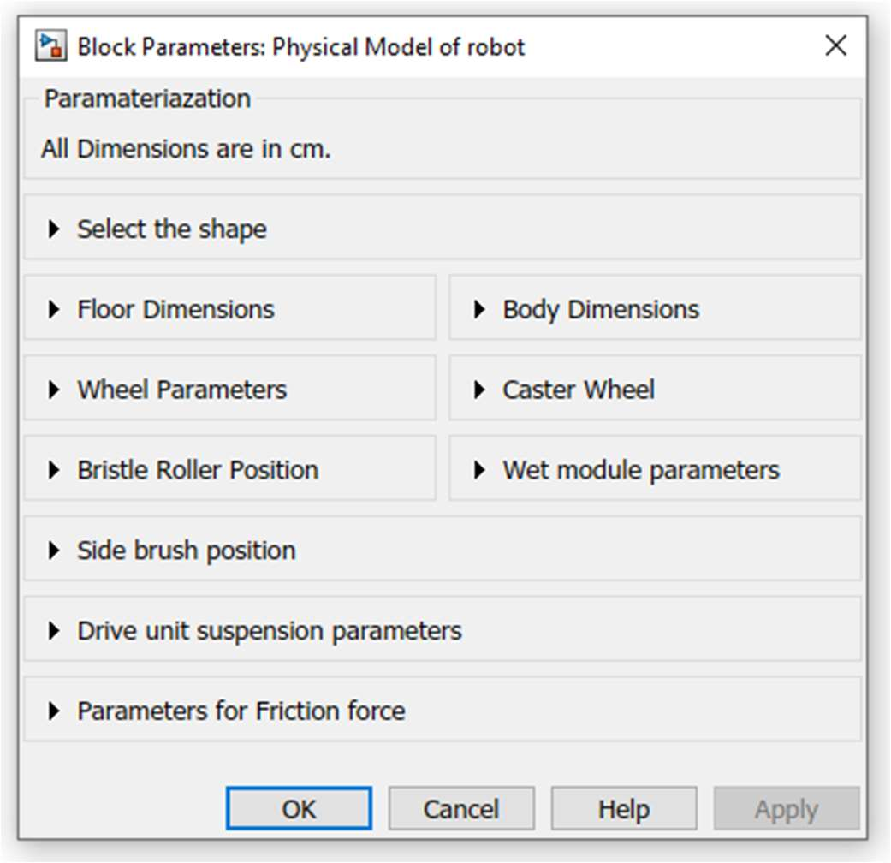
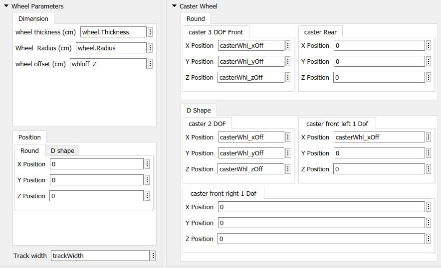
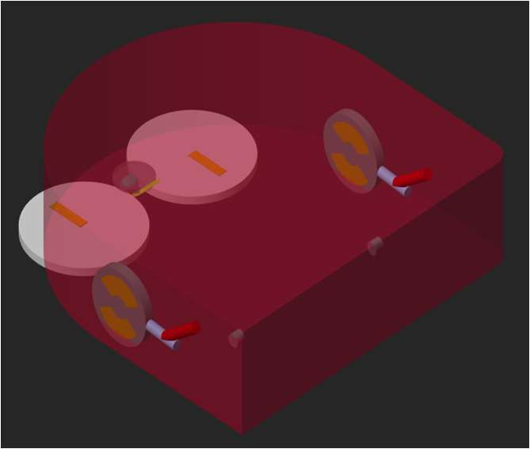
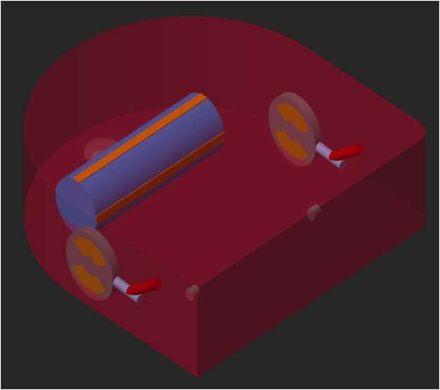
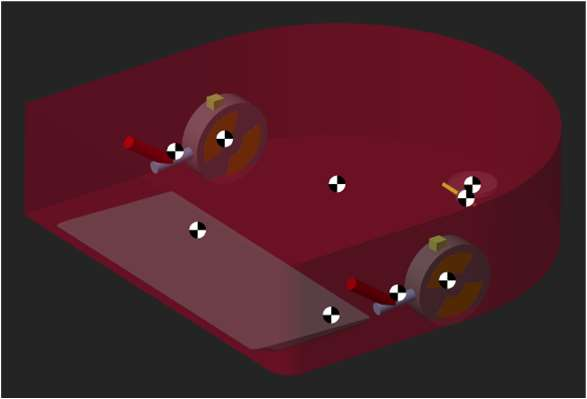
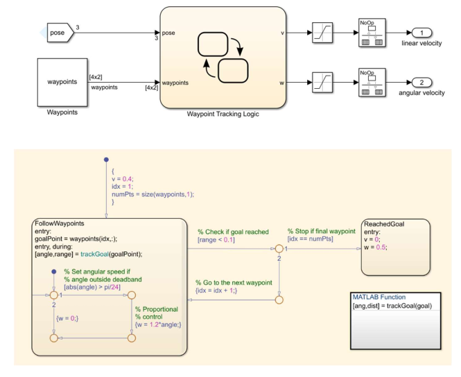

Recorded in the Simscape Mechanics Explorer. The suction mouth hits the step first and lifts the front. Then the spring-loaded drive wheels reach the edge and pull the robot up.
The robot model drops off the obstacle. The spring pushes the drive wheels back down to the floor.
| Thesis | Determining physical relationships and building mathematical models in robotic systems. Master's in Mechatronics Engineering, University of Applied Sciences Kaiserslautern, 2022 |
| Reference robot | A commercial D-shaped differential-drive vacuum robot |
| Tools | MATLAB, Simulink, Simscape Multibody, Simscape Multibody Contact Forces Library, Stateflow |
| Model envelope | D-shaped body, 36 * 35 * 10 cm, all key dimensions set from one parameter mask |
| Drive units | Leading, trailing and telescopic suspension as switchable variants, 470 N/m spring with 5 cm free length |
| Solver | ode23t (the contact model is stiff) |
| Validation | Maximum climbable obstacle height, simulation against the real robot |
Physical tests on a vacuum robot are slow. Every change to the wheel position, spring or centre of gravity means a new prototype and a new test series. My thesis built a simulation model that answers these questions first, so fewer physical tests are needed.
The robot has two driven wheels with radius R on one axle, track width L apart. It cannot slide sideways, and each wheel rolls without slip. The forward and angular velocity of the robot then follow from the two wheel speeds φ̇r and φ̇l:
To drive the model I need the inverse. A controller asks for v and ω, and each wheel gets its own speed:
The thesis also derives the Lagrange dynamic model, M(q)·q̈ + V(q, q̇)·q̇ = B·τ. In the simulation, Simscape Multibody builds and solves these equations itself. The derivation was there to understand what the solver does and which parameters matter.

Whether the robot climbs a step or gets stuck is decided almost entirely by contact forces. The model uses penalty-based contacts. Two bodies may overlap slightly, and a spring-damper pushes them apart.
Friction coefficients are not standard values. They depend on the material pair, so I measured this wheel on wood. I placed a 60.8 g drive wheel on a wooden board and raised one end until the wheel started to slide. At that angle θ, the static friction coefficient is μs = tan θ.
These values go straight into the floor contacts. The kinetic coefficient is set below the static one, and both are mask parameters, so other floors can be simulated by changing two numbers.






The real robot had already been tested on steps of increasing height. It climbs 19 mm, needs several attempts above 15 mm, and gets stuck above 19 mm. I rebuilt this test in the model with a rectangular obstacle, a 3 mm edge fillet as in the test standard, and the obstacle height and approach angle as script parameters.
| Test | Suspension | Max. obstacle height |
| Real robot | Leading link | 19 mm |
| Simulation | Leading link | 19 mm |
| Simulation | Trailing link | 20.5 mm |
With the same suspension as the real robot, the model reaches the same 19 mm limit. The trailing-link variant gives the wheels more traction force and climbs 20.5 mm in the model. That is a design change the model can rank before anyone builds it.
I also modelled a braking test. A short-circuited motor becomes a sudden zero wheel speed, and counter-braking becomes a reversed speed for a set time. The model stopped in 7.8 mm and 7.19 mm on wood. The physical test had measured 13 mm and 10 mm on cork. With different floors and an estimated centre of gravity, this was a trend check, not a validation.
Moving sliders for v and ω by hand is a poor way to test a model. So I added a simple posture controller that drives the multibody robot through a list of waypoints.
trackGoal computes the distance to the goal, √((x_g − x)² + (y_g − y)²).
The robot model drives the waypoint course under the Stateflow controller, with full contact and friction dynamics.